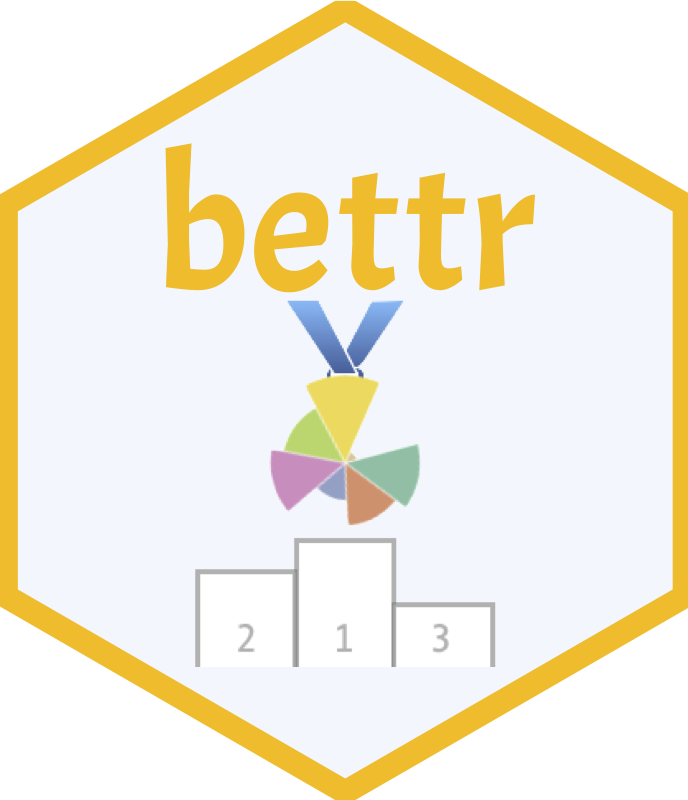
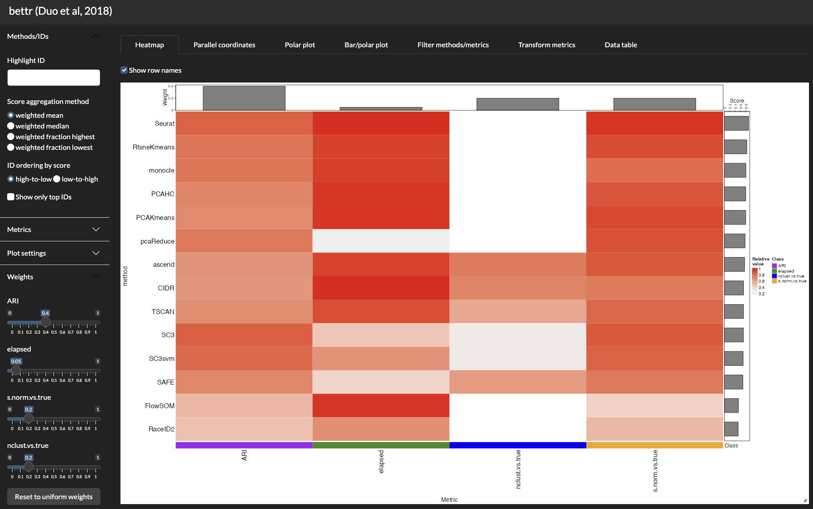
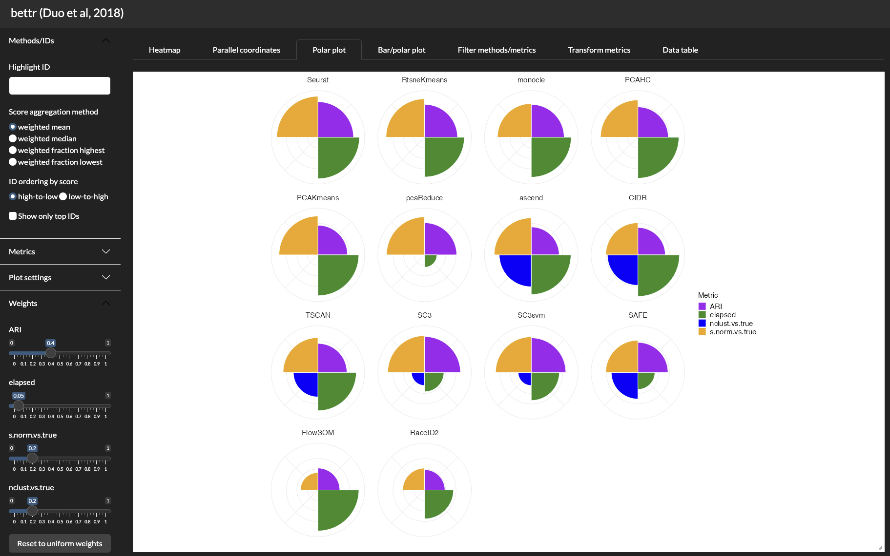

As new (computational) methods come along, it becomes essential to compare their performance to existing ones via objective and fair benchmarking.
In a benchmarking study, typically many different performance metrics are calculated and used to reflect different aspects of performance. These performance metrics can then be combined into one “overall” ranking. However, not all aspects are equally important to everyone, and thus there is more than one “right” way of aggregating metrics in order to rank methods.
bettr is our proposal to perform this aggregation in an interactive way, allowing the user to focus on the aspects that are most important to them, and use different types of visualization approaches, enhancing the final overview of the benchmarking process.
The screenshots below display two of the representations provided by bettr, using data from the benchmark of single-cell clustering methods performed by Duo et al (2018).


Installation
bettr can be installed from Bioconductor (from release 3.19 onwards):
if (!require("BiocManager", quietly = TRUE))
install.packages("BiocManager")
BiocManager::install("bettr")The latest development version can be installed from GitHub via
BiocManager::install("federicomarini/bettr")